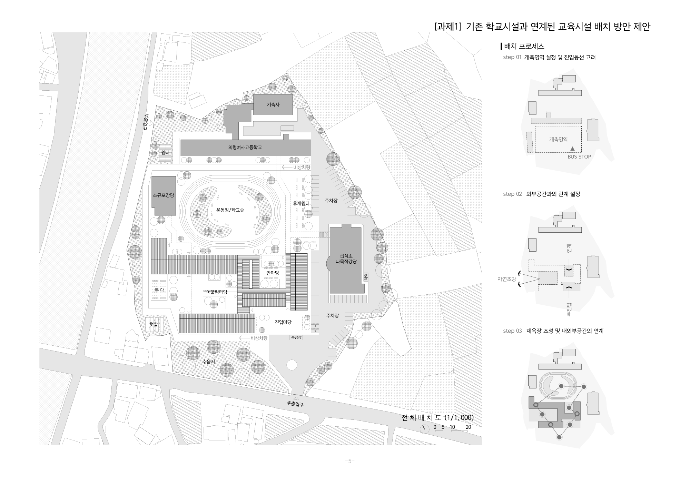
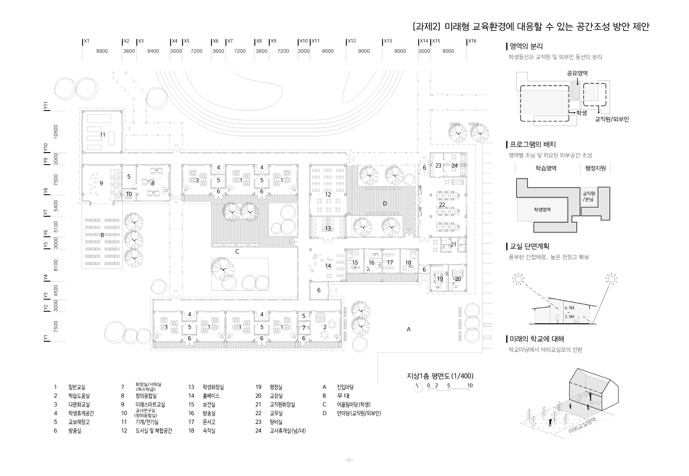
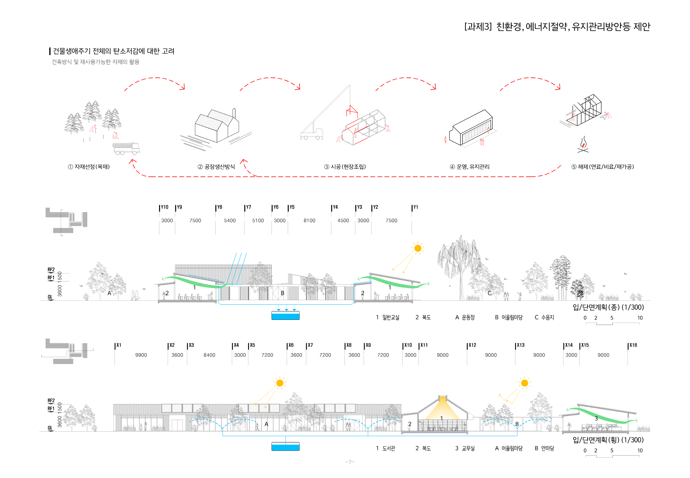

의령여중 미래학교 본관동 개축공사
의령여중은 산과 경작지, 하천으로 둘러싸인 우수한 자연환경을 갖춘 학교로,
기존의 획일적인 학교 건축 문법에서 벗어나
자연과 조화를 이루는 건축과 공간을 제안하고자 했다.
새로운 교사동은 운동장 영역에 낮고 길게 배치되며,
하나의 큰 운동장을 해체하여 다양한 스케일의 외부공간을 구성하였다.
이러한 외부공간은 각 교실과 직접 연계되어
학습과 휴식, 활동이 유연하게 확장되는 환경을 제공하며,
학교 전체는 하나의 건물이 아닌 작은 마을과 같은 풍경으로 인식되도록 계획하였다.
박공지붕이 반복되는 입면은 의령여중만의 새로운 경관을 형성한다.
모든 교실은 남향으로 배치되고 마당과 인접하여,
학생들이 실내와 외부공간을 자유롭게 오갈 수 있도록 하였다.
외부공간은 단순한 마당을 넘어 야외 학습과 휴식,
다양한 활동이 이루어지는 교육 공간으로 기능한다.
교직원과 방문객, 지역 주민의 동선은 명확히 분리하여
주말과 방과 후에는 도서관을 지역 커뮤니티에 개방할 수 있도록 계획하였다.
본 계획은 학령인구 감소와 지역 고령화라는 미래 조건을 고려하여,
학교가 장기적으로 지역 커뮤니티의 중심 시설로 작동할 수 있는
확장성과 지속가능성을 갖춘 공간을 제안한다.


